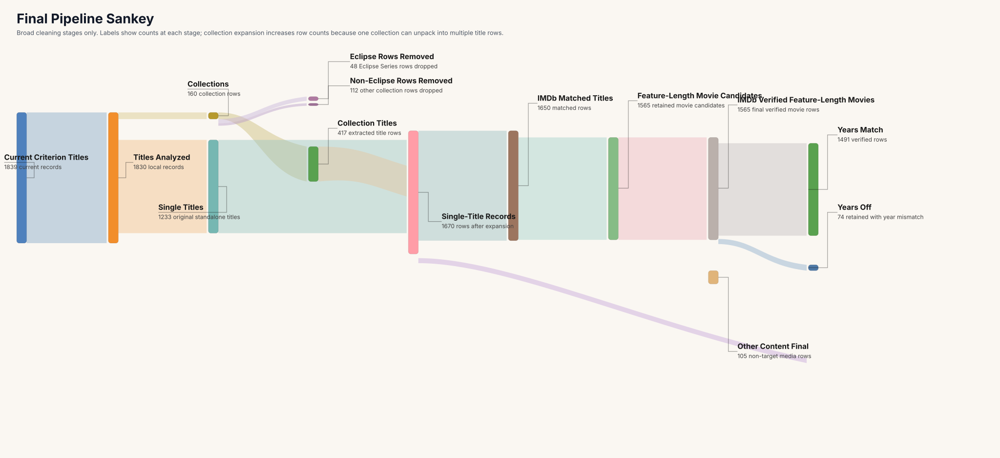

This project starts with the raw Criterion catalog and turns it into a reproducible, film-level dataset of IMDb-verified feature-length movie records. The main challenge is that the Criterion catalog mixes standalone films with box sets, anthologies, shorts, television material, missing metadata, and ambiguous titles. The methodology below explains how those records were standardized, matched, reviewed, and split into final outcome categories.
The goal is to explain, step by step, how the raw Criterion dataset became a cleaned dataset of IMDb-verified feature-length movie records. The process is designed to be reproducible rather than ad hoc: every major transformation is named, every ambiguous case has a review path, and the final buckets keep unresolved records visible instead of quietly dropping them.
The Sankey below is a visual summary of the broad structure of the cleaning pipeline. It is intentionally high level: it shows major stage transitions and final reporting buckets, not every tiny matching heuristic.

Collection rows are identified using title patterns, existing collection maps, and previously resolved collection outputs. Examples include trilogies, director sets, multi-film packages, and anthology releases. These are unpacked into constituent titles instead of being treated as one movie.
Bonus material, supplements, shorts, and television content are not removed at this stage; they are preserved as title rows so they can be classified later.
After expansion, the working table is reduced so that every row corresponds to exactly one title. Collection/container rows stop being counted as content rows. Parent collection information is retained as provenance metadata rather than as title identity.
Duplicate titles are resolved using IMDb ID first, then normalized title and year, while preserving collection provenance as an additional source relationship.
Single-title rows are matched to IMDb using exact title matching, title-plus-year matching, alternate titles, foreign-language titles, fuzzy title matching, and manual resolution when needed. Tie-breaking prefers exact normalized title and year, then corroborating metadata such as runtime or director.
Rows are not force-matched when multiple candidates remain plausible.
IMDb-matched rows are filtered using broad feature-length rules. The default positive signal is titleType = movie with runtime >= 40 minutes. Rows classified as TV, miniseries, shorts, video, or other non-target media are routed out of the main movie path.
The documentary rule is treated as a project-level assumption rather than hidden inside the filter.
Manual review handles cases that are not safe to resolve automatically: multiple IMDb candidates, large year conflicts, missing runtime, inconsistent title types, foreign-title ambiguity, and contaminated collection-derived rows.
Manual review is not a failure bucket. It is the explicit place where weak or subjective decisions are documented instead of guessed.
After review, final retained feature-length films are verified and split into reporting buckets based on year agreement and verification status. Non-target media, unresolved titles, and source-quality failures remain visible as final outcomes.
The result is a reproducible cleaning system with explicit end states, not a one-way sequence of silent exclusions.
Manual review is where the methodology is most subjective, so the process is specified rather than hidden. Rows enter review when matching or classification cannot be defended automatically.
Verified feature-length movie records where the Criterion year agrees with the IMDb year.
Verified feature-length movie records retained despite a Criterion-vs-IMDb year mismatch. The mismatch is documented rather than hidden.
Titles that could not be matched or verified confidently enough to be treated as final verified films.
Rows that are real content but not target feature-length films, such as TV material, shorts, bonus features, and other non-target media.
Rows blocked by missing analysis, parsing failures, malformed source data, or other source-quality problems.
The pipeline keeps unresolved cases visible. These include titles with no defensible IMDb match, titles with multiple plausible candidates, rows with missing runtime or type information, and collection-derived records whose extracted child titles still look contaminated.
That unresolved residue is part of the methodology rather than a flaw in presentation: the page is meant to show where the cleaning process is strong, where it depends on explicit assumptions, and where more data or more review is still needed.